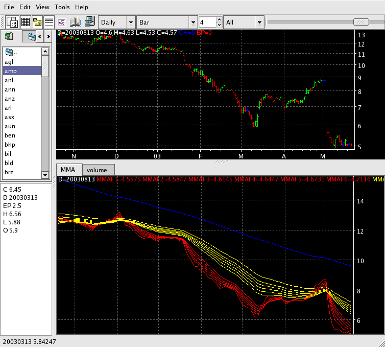

Multiple Moving Averages - MMA

Description:
A group of six short-term (fast) moving averages and a group of six
medium-term
(slow) moving averages. The relationships between the two groups and
the
patterns inside each group will provide certain indicators.
An additional MA shows a long-term trend.
Parameters:
- Fast Color - Color of the short-term set of MAs
- Fast Input - The data field that the set of fast MAs are based on
- Fast Line Type - The line type for this set of MAs
- Fast Label 1 - The text to identify the first fast MA
- Fast Label 2 - The text to identify the second fast MA
- ... other labels for the 6 short-term MAs
- Fast Period 1 - The period used for the first fast MA
- Fast Period 2 - The period used for the second fast MA
- ... other fast periods for the 6 short-term MAs
- Fast Displace 1 - The number of bars to displace the fast 1 MA
plot to the right
- ... other fast displace for the 6 short-term MAs
- Fast Type - The type of MA to use
- Long-term Color - Color of the long-term MA
- Long-term Input - The data field that the long-term MA is based on
- Long-term Line Type - The line type for this MA
- Long-term Label - The text to identify the long-term MA
- Long-term Period - The period used for the long-term MA
- Long-term Displace - The number of bars to displace the long term
MA plot to the right
- Long-term Type - The type of MA to use
- Slow Color - Color of the medium-term set of MAs
- Slow Input - The data field that the set of slow MAs are based on
- Slow Line Type - The line type for this set of MAs
- Slow Label 1 - The text to identify the first slow MA
- Slow Label 2 - The text to identify the second slow MA
- ... other labels for the 6 medium-term MAs
- Slow Period 1 - The period used for the first slow MA
- Slow Period 2 - The period used for the second slow MA
- ... other slow periods for the 6 medium-term MAs
- Slow Displace 1 - The number of bars to displace the slow 1 MA
plot to the right
- ... other slow displace for the 6 medium-term MAs
- Slow Type - The type of MA to use
Some hints for interpretation
[Not yet done]